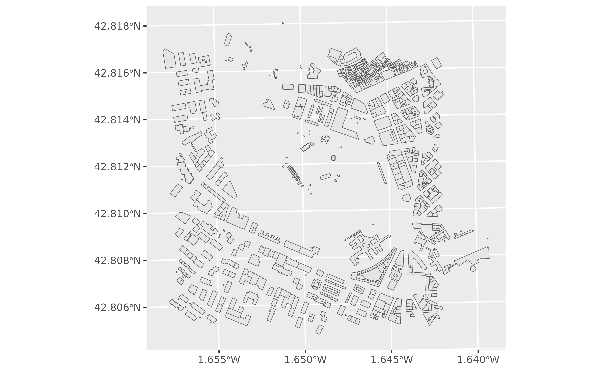

Build and run a WFS INSPIRE request. This function supports the package's WFS functions and is also available for querying other cadastral or INSPIRE resources.
Usage
inspire_wfs_get(
scheme = "https",
hostname = "ovc.catastro.meh.es",
path = "INSPIRE/wfsCP.aspx",
query = list(),
verbose = FALSE
)Arguments
- scheme
Character string specifying the protocol used to access the resource.
- hostname
Character string specifying the resource host.
- path
Character string specifying the resource path on the host.
- query
Named list of query parameters and their values.
- verbose
Logical. If
TRUE, displays informational messages.
Details
The function constructs a request URL from its components, downloads the result to a temporary cache and reports WFS exceptions. See Examples.
See also
Query data from WFS INSPIRE services:
catr_wfs_get_address_bbox(),
catr_wfs_get_buildings_bbox(),
catr_wfs_get_parcels_bbox()
Examples
# Access the Cadastre of Navarra
# Try also https://ropenspain.github.io/CatastRoNav/
file_local <- inspire_wfs_get(
hostname = "inspire.navarra.es",
path = "services/BU/wfs",
query = list(
service = "WFS",
request = "getfeature",
typenames = "BU:Building",
bbox = "609800,4740100,611000,4741300",
SRSNAME = "EPSG:25830"
)
)
if (!is.null(file_local)) {
pamp <- sf::read_sf(file_local)
if (requireNamespace("ggplot2", quietly = TRUE)) {
library(ggplot2)
ggplot(pamp) +
geom_sf()
}
}
